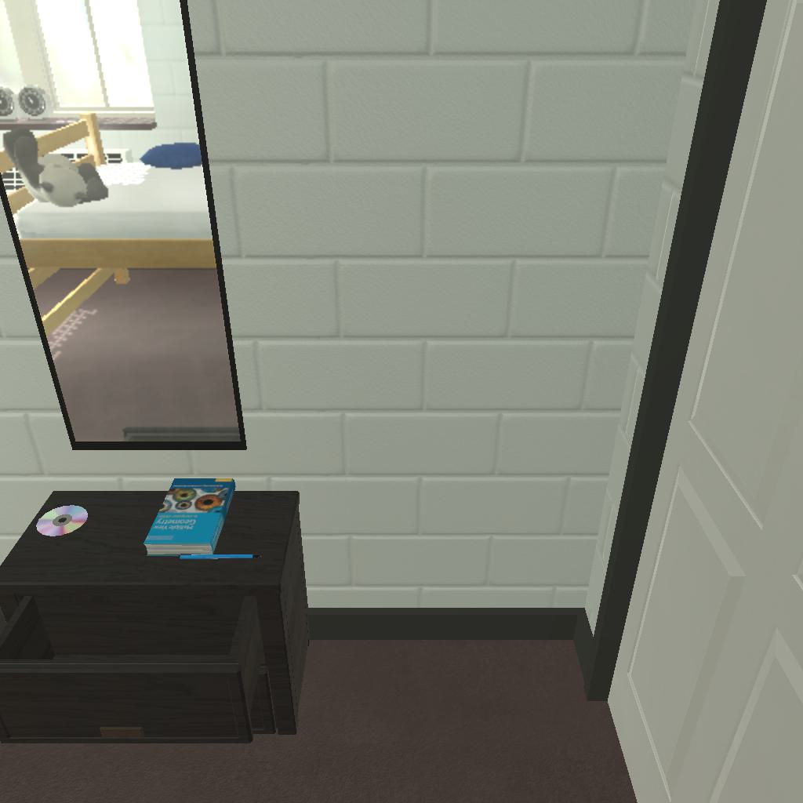

---------------------------------------------------------task: 8---------------------------------------------------------
--------------------------------------------------------------------------------------------------------------------------------------------------------------------
--------------------------------------------------------------------------------------------------------------------------------------------------------------------
Step:--------------------------------------------------------------------------17-------------------------------------------------------------------------------
----------------------------------------
VLM Prompt:
Image1:
**Instruction**
1. Analyze the provided image to identify all visible household objects, focusing on those relevant to the task description "put a laptop in desk."
2. Use the analysis of the image and the task hint "The agent must find an object of the desired type, pick it up, find the correct location to place it, and put it down there." to answer the question: what is the most reasonable action in the choices for the task description "put a laptop in desk"?
4. Decide and write the answer using the template: The answer is: (i): , where i is the real number. If there is no desired object in the image, search every place based on **Initial Observation** to find the object. And if no one is exactly correct, choose a similar answer.
**Initial Observation**
You are in the middle of a room. Looking quickly around you, you can see bed (1), garbagecan (1), desk (1), sidetable (1), drawer (1-5), laundryhamper (1)
**Answer Choices**
(1): go to bed 1
(2): go to garbagecan 1
(3): go to desk 1
(4): go to sidetable 1
(5): go to laundryhamper 1
(6): go to drawer 3
(7): go to drawer 4
(8): go to drawer 5
(9): close drawer 1
(10): take book 1 from drawer 1
(11): take cd 1 from drawer 1
(12): take pen 2 from drawer 1
(13): examine drawer 1
**Answer**
Let's think step by step by following the instructions.
----------------------------------------
----------------------------------------
Original Response:
The provided image shows a room with a mirror reflecting another part of the room, and in the visible part, we can see a sidetable with a book and a CD on it, and a part of a door frame. There is no laptop visible in this image.
Based on the Initial Observation, there are several objects in the room like a bed, garbagecan, desk, sidetable, drawers, and a laundry hamper. Since the task is to "put a laptop in desk," we should be looking for a laptop and then placing it on the desk.
None of the answer choices directly mention finding or taking a laptop, so we need to search every place based on Initial Observation to find the object.
The most reasonable action from the choices, to begin with, would be to go to the desk, which is where we eventually want to place the laptop. From there, we can search the desk or nearby drawers that may contain the laptop. So, the first step should be:
The answer is: (3): go to desk 1
----------------------------------------
----------------------------------------
>>> Refine Original VLM Response and Get Pure Action: go to desk 1
----------------------------------------
-----------------------------------------------------------------
Running time: 32.58321952819824 seconds
Total Money: 2.2377000000000002
-----------------------------------------------------------------
-----------------------------------------------------------------
Text Observation:You arrive at loc 2. On the desk 1, you see a alarmclock 1, a pencil 1, and a pen 1.
-----------------------------------------------------------------
UNSUCCEED